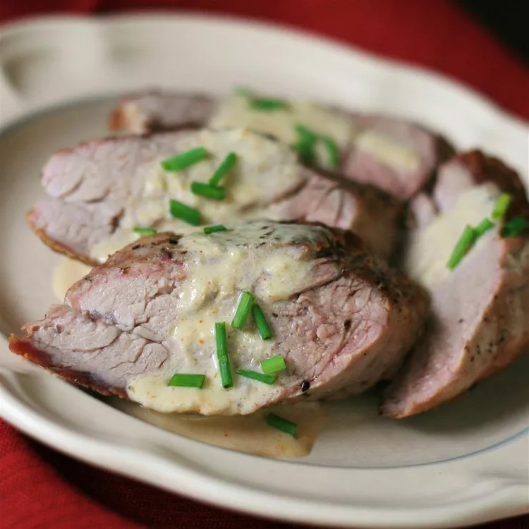

Ingredients
- 1 (1 lb) whole pork tenderloin
- Salt and freshly ground black pepper to taste
- 2 tsp vegetable oil
- ½ cup chicken broth
- 2 tbsp heavy cream
- 1 tbsp extra-hot prepared horseradish
- 1 tbsp Dijon mustard
- ¼ tsp cayenne pepper
- 1 tbsp cold unsalted butter
- 1 tsp chopped fresh chives
Instructions
- Preheat oven to 190°C
- Season pork with salt and black pepper
- Heat oil in an ovenproof skillet over high heat
- Add pork; cook until browned on one side (~3-4 minutes)
- Flip pork; transfer skillet to oven
- Cook until pork browned and still slightly pink in center (20-25 minutes)
- An instant-read thermometer inserted into the center should read at least 63°C
- Transfer pork to a plate
- Discard any excess oil from skillet
- Place skillet over medium-high heat
- Add chicken broth; bring to a boil, scraping any browned bits off bottom of skillet
- Whisk in cream, horseradish, Dijon mustard, and cayenne pepper
- Continue cooking until reduced to a thick sauce (3-4 minutes)
- Off heat, whisk in cold butter, then stir in chives
- Slice pork into 1/2 in slices; top with sauce